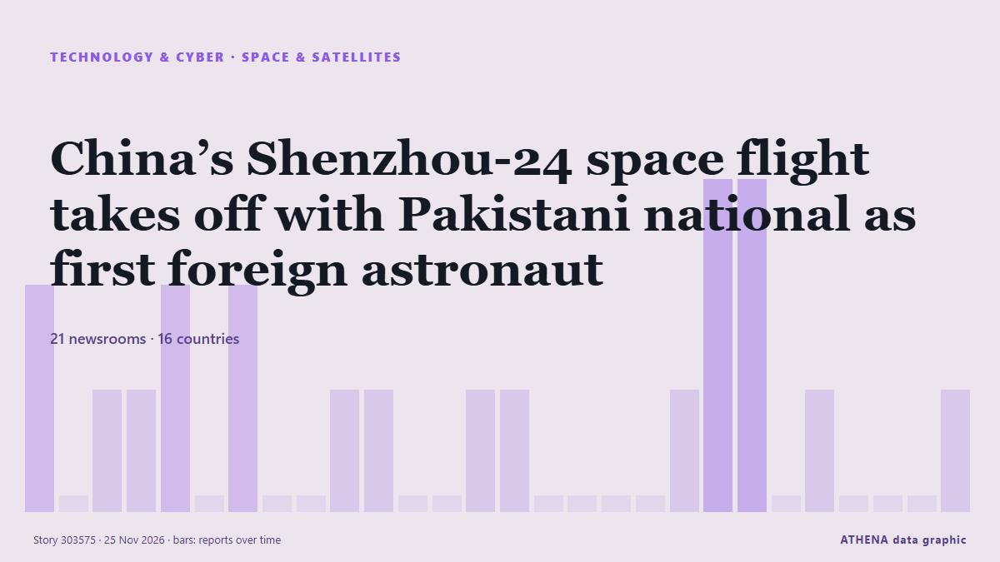

Technologie, IA et cybersécurité
SponsoriséPrésenté par  Cybernetics and Artificial Intelligence Lab Welcome to the Cybernetics and Artificial Intelligence Laboratory, established at the Department of Business Administration of the National and Kapodistrian University of Athens. The lab is headed by Professor Dimitrios Thomakos. The lab aims to do research that can be published in top venues. Our research uses tools and methods of Artificial Intelligence, and lies in the following areas: - Forecasting - Decision making - Cyber security - Finance We are always looking forward to collaborating with exceptional students!
Cybernetics and Artificial Intelligence Lab Welcome to the Cybernetics and Artificial Intelligence Laboratory, established at the Department of Business Administration of the National and Kapodistrian University of Athens. The lab is headed by Professor Dimitrios Thomakos. The lab aims to do research that can be published in top venues. Our research uses tools and methods of Artificial Intelligence, and lies in the following areas: - Forecasting - Decision making - Cyber security - Finance We are always looking forward to collaborating with exceptional students!
Les titres sont affichés en anglais, tels que publiés.

Espace et satellitesChina’s Shenzhou-24 space flight takes off with Pakistani national as first foreign astronaut
JIUQUAN, China: China’s Shenzhou-24 space flight launched successfully on Wednesday morning, with its three-man crew including a Pakistani national, who will be the first foreign astronaut to board… de Arab News
| 12 nov. | 74 |
|---|---|
| 13 nov. | 87 |
| 14 nov. | 40 |
| 15 nov. | 45 |
| 16 nov. | 115 |
| 17 nov. | 104 |
| 18 nov. | 105 |
| 19 nov. | 105 |
| 20 nov. | 66 |
| 21 nov. | 30 |
| 22 nov. | 46 |
| 23 nov. | 84 |
| 24 nov. | 53 |
| 25 nov. | 1 |
Alice Huang, woman at the heart of Nvidia scandal, kept in contact with China’s top spy agency for over a year
Alice Huang, who is said to have had an affair with the now-reinstated CEO of Nvidia, Jensen Huang, was in contact with China’s Ministry of State Security during that time for over a year, according… de The Independent Singapore
Op-ed: Trump’s Nvidia board intervention put a price on national security. Our adversaries will take note
President Trump's decision to force Nvidia's board to bring back Jensen Huang as CEO is exactly what Beijing, Tehran, and Moscow would want to see. de CNBC World
Microsoft Declares ‘Code Red’ After Historic 24-Hour Outage
Internal memos show Microsoft wants future outages fixed worldwide within an hour after a November failure knocked out Outlook and Teams globally. de To Vima (English)
Shenzhou-24 astronauts share preparation for spaceflight mission
Says he carries the 'hope of 250 million', mission is not a finish line but 'launchpad' for future endeavours. de Express Tribune
US Blacklists Megaspeed Cloud Company Linked to Nvidia Scandal
Suspected China spy linked to Nvidia's ex-boss left in 2025, Megaspeed says. de Ada Derana
Blanche Dodges Questions About Jensen Huang Investigation After His Reinstatement
Blanche called Nvidia a “good corporate citizen” at a press conference on Tuesday. de Forbes Business
The Saudi engineer accused of bugging OpenAI is set to be released on a $1 million bond
Judge Alex Tse allows Saudi ex-OpenAI engineer Abdulrahman Alfozan to await trial at home. de Business Insider
US Robot Submarine Finds World’s Deepest Explosive Volcanic Eruptions In Mariana Trench
Scientists sampling the Mariana Trench walls found pyroclastic rock at 6,148 metres, the deepest sign of explosive eruptions ever found in the ocean. de Marine Insight
Virginia, Oregon sue Musk's SpaceX over Grok AI's creation of child sexual abuse images and videos
Nov 23 - Virginia and Oregon are suing Elon Musk's SpaceX Super Intelligence Corp, alleging the company profited from a feature in its AI model Grok that produces child sexual abuse material and… de The Straits Times
Many Etsy Sellers Close Up Shop Over Site’s New A.I. Policy
Numerous longtime users of the online marketplace have left the platform because they do not want their work training artificial intelligence. de New York Times Business
Nato vows space defence after Russia nuclear satellite report
German media has reported that Russia plans to launch a satellite dubbed “Sputnik-S”, reportedly equipped with a nuclear warhead, in the coming weeks. de The Straits Times
8 years, 10 billion km: Japan-Europe spacecraft enters Mercury's orbit
The BepiColombo mission, a collaboration between Japan and Europe, has reached Mercury's orbit after an impressive journey exceeding 10 billion kilometers since its 2018 launch. de Times of India
GTA VI hacker released despite being sentenced to 7 years in UK prison
Arion Kurtaj, 21, who leaked 90 gameplay videos in 2022, released on license after court accounts for time spent in custody and hospital. de Anadolu Agency (English)
EU Commission confirms personal data leak after cyberattack, warns of further disruption
Names and email addresses were leaked in the cyberattack, according to one EU official, who warned that the full extent of the breach remains unclear. de Politico Europe
Peter Gabriel – “Yes, It Will Go”
Like so many of us these days, Peter Gabriel is thinking a lot about artificial intelligence. de The National Herald
U.S. adds Megaspeed to trade blacklist over export control concerns amid Nvidia controversy
The U.S. has added Megaspeed and six other companies to its trade blacklist over concerns about the potential diversion of advanced computing products. de CNBC World
OpenAI, Cisco Unveil Open Source Tool to Shield Unpatched Linux Systems
OpenAI and Cisco’s Shirudo uses AI-generated shields to block Linux exploits while patches are prepared, but it’s not yet production-ready. de SecurityWeek
Anthropic Expands Enterprise Safeguards for Detecting AI Misuse
EFS helps zero-retention customers spot Claude misuse spread across many requests while keeping conversation data in their own cloud. de SecurityWeek
Okta Links ShinyHunters-Associated Vishing Group to New INCEPTION Data Leak Site
A threat cluster previously assessed to be affiliated with the ShinyHunters extortion crew may have rebranded and continued operations under a new name called INCEPTION, according to Okta's Threat… de The Hacker News
AI tools help brands curb Black Friday deals, from clothes to skincare
Often, the tools conclude that companies can reduce discounts without dampening demand,. de The Straits Times
Microsoft Azure flaw exploited to steal customers' API credentials
Microsoft is warning customers that a security vulnerability in Azure API Management (APIM) Classic tiers was exploited to steal stored API credentials, with Norwegian authorities linking the flaw to… de BleepingComputer
Turkish Authorities Say Animal Spotted in Istanbul Woodland Was Not a Lion
The National Parks Directorate said specialist veterinarians and teams equipped with thermal imaging cameras were assisting the search, which was focused on a wooded area. de Euronews English
Anthropic mathematician claims to have solved 167-year-old math problem with Claude
An anthropic mathematician claims to have solved the Riemann hypothesis using Claude. de Tom's Hardware
UK defence secretary wants to find out what happened with Starlink and Starshield in Ukraine
UK Defence Secretary Wes Streeting said Starlink and Starshield disruptions in Ukraine require a clear explanation, noting they have dented allies' trust. de Ukrainska Pravda (English)
Spanish football league LaLiga suffers cyberattack exposing fans' personal data
Stolen information includes data from users registered with LaLiga's digital services and those of some clubs. de Anadolu Agency (English)
Lough Neagh book reveals warnings of wastewater treatment ‘disaster‘ due to NI Water funding cut
A new book about the plight of Lough Neagh reveals the anticipated impact of a lack of investment in wastewater infrastructure. de The Irish News (Belfast)
US Cyber Director Pick Signals Shift Toward Expertise
Trump named Kirsten Davies as Acting National Cyber Director, bringing greater industry experience to the role amid recent outages and rising geopolitical tensions. de Dark Reading
Reports: Russia may launch nuclear weapon into orbit as soon as next month
A nuclear detonation in space "could cause rapid and sudden loss or degradation of thousands of satellites." de Ars Technica
European-Japanese spacecraft reaches Mercury after eight-year journey, suffers glitch
Mercury, only slightly larger than Earth's Moon, is the least explored of the four planets in the inner solar system, with BepiColombo only the third spacecraft to visit the planet. de The Jerusalem Post
FBI reportedly investigating apparent hack of its criminal database
The National Crime Information Center database is used by federal and local law enforcement to share information. de BBC News
Countries agree to work toward ‘killer robots’ pact
GENEVA, Nov 20 - UN talks on rules for autonomous weapons headed into overtime on Friday with some nations including Russia dragging their feet and negotiators considering a non-binding deal on arms… de The Straits Times
Ethiopia and Rwanda Seek to Elevate Bilateral Partnership Through Practical Cooperation
Addis Ababa, November 23, 2026 (FMC) – Ethiopian Prime Minister Abiy Ahmed held talks with Rwandan Prime Minister Justin Nsengiyumva to exchange views on advancing practical collaboration and explore… de Fana Broadcasting Corporate
OpenRouter drops three AI providers after Dragos catches prompt theft
OpenRouter has removed three inference providers from its platform and stripped 125 endpoints of their Zero Data Retention (ZDR) status. de The Next Web
TikTok launches tool to help public figures detect deepfakes globally
The tool is being gradually rolled out, allowing politicians and popular TikTok accounts to report AI-generated content using their likeness without consent. de Free Malaysia Today